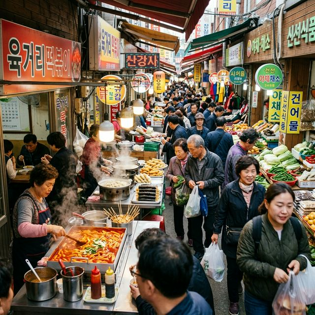

벚꽃 엔딩과 함께 본격적인 신록의 계절이 시작되는 4월, 어디론가 훌쩍 떠나고 싶다면 충북 청주로의 여행은 어떨까요? 청주는 '교육의 도시'라는 점잖은 이미지 뒤에, 골목마다 숨겨진 보석 같은 이야기와 입을 즐겁게 하는 다채로운 미식이 가득한 곳입니다. 대중매체를 통해 익히 알려진 드라마 촬영지부터 대통령들의 휴양지였던 비밀스러운 공간까지, 청주의 핵심 명소 3곳을 엮어 가장 알찬 당일 여행 코스를 설계해 보았습니다. 지금부터 2026년 봄날에 즐기기 좋은 청주 여행 지도를 펼쳐보겠습니다.
여행의 시작은 청주 시내가 한눈에 내려다보이는 수암골에서 시작하는 것이 좋습니다. 과거 한국전쟁 피란민들이 모여 살던 달동네였던 이곳은 2007년부터 시작된 공공 미술 프로젝트를 통해 지붕 없는 미술관으로 거듭났는데요. 골목골목 그려진 익살스럽고 따뜻한 벽화들은 방문객들의 발걸음을 멈추게 합니다. 특히 '제빵왕 김탁구', '영광의 재인' 등 유명 드라마의 촬영지로 알려지면서 전국적인 명소가 되었습니다. 벽화 구경을 마친 후에는 우암산 자락을 따라 형성된 카페거리에서 시원한 커피 한 잔과 함께 청주 시내의 전경을 감상해보세요. 밤이면 아름다운 야경 포인트로도 손꼽히는 곳입니다.
금강산도 식후경, 점심시간에 맞춰 방문해야 할 곳은 청주를 대표하는 전통시장인 육거리 종합시장입니다. 충청북도에서 가장 큰 규모를 자랑하는 이곳은 활기 넘치는 시장 특유의 분위기를 만끽할 수 있는데요. 육거리시장에는 없는 게 없다는 말이 있을 정도로 농수산물부터 의류, 잡화까지 방대한 품목을 취급합니다. 하지만 여행자들에게 가장 중요한 것은 역시 먹거리겠죠? 시장 곳곳에서 풍겨 나오는 고소한 전 냄새와 갓 튀겨낸 도넛, 족발 등은 여행의 즐거움을 배가시킵니다. 시장 내부는 비 가림 시설(아케이드)이 잘 갖춰져 있어 날씨에 상관없이 쾌적하게 구경할 수 있다는 점도 큰 장점입니다.

오후 일정은 대청호반의 수려한 경관을 품고 있는 청남대로 향합니다. '따뜻한 남쪽의 청와대'라는 뜻을 지닌 이곳은 20년간 대통령들의 전용 별장으로 이용되다가 2003년 일반인에게 전면 개방되었는데요. 역대 대통령들이 머물던 본관 건물부터 그들이 산책하던 산책길까지, 권위적이었던 공간이 이제는 국민들의 힐링 명소로 탈바꿈했습니다. 특히 약 14km에 달하는 대통령길(전두환·노태우·김영삼·김대중·노무현·이명박 길)은 대청호를 끼고 걷는 환상적인 트래킹 코스를 제공합니다. 봄이면 튤립과 영산홍 등 온갖 꽃들이 정원을 수놓아 1년 중 가장 아름다운 풍경을 보여줍니다.
| 구분 | 상세 내용 | 비고 |
|---|---|---|
| 입장 요금 | 성인 6,000원 / 청소년 4,000원 | 단체 할인 가능 |
| 관람 시간 | 09:00 ~ 18:00 (월요일 휴관) | 계절별 상이 |
| 소요 시간 | 본관 및 주요 산책로 관람 시 약 3시간 | 편한 신발 필수 |
청주에는 아주 특별한 '거리'가 하나 더 있습니다. 바로 전국 최초의 삼겹살 거리(서문시장 내 위치)인데요. 청주는 예부터 돼지고기 문화가 발달한 도시로, 간장 소스에 고기를 담갔다가 굽는 독특한 방식의 삼겹살을 맛볼 수 있습니다. 파무침과 함께 곁들여 먹는 청주식 삼겹살은 한 번 맛보면 잊기 어려운 깊은 풍미를 자랑합니다. 저녁 식사로 삼겹살 한 판을 즐기며 하루의 여독을 풀어보세요. 또한, 청주의 또 다른 명물인 '올갱이국'이나 '짜글이' 찌개도 현지인들이 강력 추천하는 로컬 푸드이니 미식가라면 꼭 메모해두시길 바랍니다.
만약 앞선 3곳의 명소를 모두 둘러보고도 시간이 남는다면, 청주의 진산인 우암산에 위치한 상당산성을 추천합니다. 조선시대 영조 때 쌓은 석성으로, 성곽의 둘레가 약 4.2km에 달하는데요. 성곽을 따라 걷는 길은 경사가 완만하여 가벼운 산책 코스로 아주 훌륭합니다. 성 내부에 형성된 마을에는 손두부와 전을 파는 식당들이 많아 정겨운 분위기를 느낄 수 있습니다. 역사적인 가치와 자연의 아름다움을 동시에 느낄 수 있는 상당산성은 청주 시민들이 가장 사랑하는 쉼터 중 하나이기도 합니다.
당일치기라는 짧은 일정이었지만, 수암골의 예술적 감성과 육거리시장의 활력, 그리고 청남대의 귀중한 역사까지 청주의 정수를 만끽할 수 있는 코스였습니다. 청주는 화려하진 않지만 은은한 매력이 발길을 붙잡는 도시입니다. 2026년 봄, 멀리 떠나는 것이 부담스럽다면 가벼운 마음으로 청주행 티켓을 끊어보세요. 익숙한 풍경 속에서 발견하는 낯선 즐거움이 여러분에게 특별한 위로와 휴식을 선물할 것입니다. 오늘 소개해 드린 루트를 따라가다 보면, 어느새 청주의 매력에 푹 빠진 자신을 발견하게 될 것입니다.